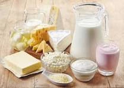

Fresh Dairy Products
We ensure the freshest milk and dairy products straight from our farm to your table.

Sustainable Farm Practices
Our farm operates with the highest standards in sustainability and care for our animals.

Local Community Support
We proudly support our local community by providing fresh, organic products and more.